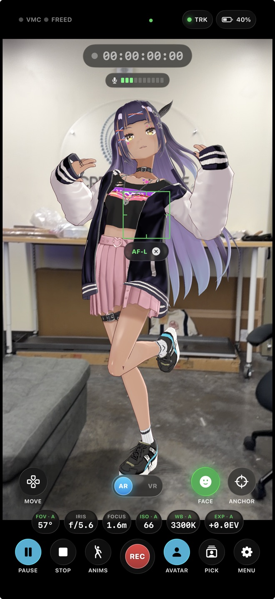
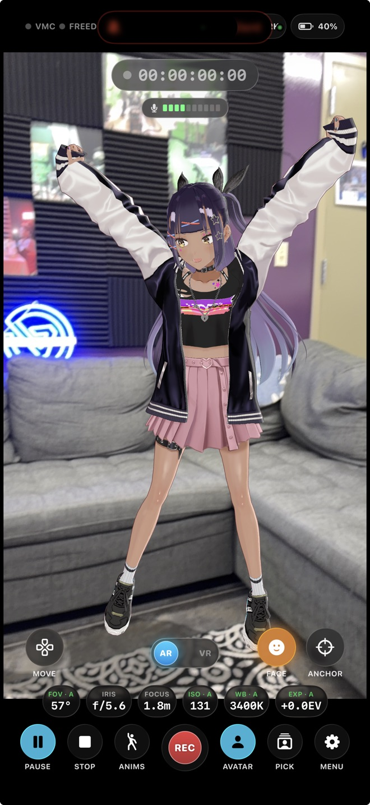

Virtual camera & AR VTuber app for iPhone
VR meets IRL. Use your phone as a virtual camera, perform as a VTuber in AR, and take the show live anywhere. No PC, no rig.
Free TestFlight beta. No account needed.
Bring your avatar into the real room, ready to record, clip, or go live.
Move your phone and the camera moves with it, inside your Warudo scene. Lean in close, pan around, follow the action, all handheld.
Load your own VRM model and perform it live in AR. Stream from anywhere.
Drive your avatar's expressions live with the front camera, or bring in external face tracking.
Play built-in idle and dance animations, or load your own.
Capture your full performance in one take, ready to post.
Your avatar stands in the actual room, so VTubers and IRL streamers can share a scene and stream together.
Bond Wi-Fi with cellular over SRTLA so your stream holds up when you walk, ride, or lose a bar. Needs an SRTLA server; bonding by Moblin. See the setup guide.
The virtual camera tracking works with Warudo. Send your camera move and avatar into your scene over the network, and drive your avatar back onto your phone. Grab the Workshop plugin and follow the setup guide.
Output over HDMI to a TV or capture card. Watch your shot on the big screen, or pull it into your stream setup.


Free TestFlight beta. No account needed. Made in Hawai‘i.
Get on the list and be first in when the beta opens. Free, no account needed.
Join the waitlist